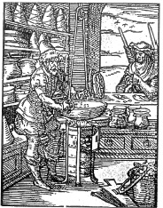

ŞEKİL 55. Eczane ve laboratuvarı [Jost Amman, Stände und Handwerker
(Eygentliche Beschreibung aller Stände auff Erden...), Nürnberg, 1574].50
Oldukça geç bir dönemde ise Jan Luyken (1649-1712) ve Christoph Weigel’in (1651-1725) bakır kazıma resimlerle süsledikleri, tüm meslekleri tanıtıcı başkaca kitaplar ortaya çıkmıştır. Hemen hemen her eczacı, kendi mesleğiyle ilgili bir kazıma resim kalıbına sahip olmak istediğinden, böyle resimler piyasada çok pahalıya müşteri buluyordu.
Eczacı ve eczane resimlerine öykü ve şiir kitaplarında da rastlanmaktadır. 1842 yılında Düsseldorf’lu grafik sanatçısı Johann Baptist Sonderland (1805-1878), Friedrich Rückert’in (1788-1866) çok uzun bir şiirini resimlemiştir (ŞEKİL 56). Bu resimde sevimli bir eczacı, bir bahçeye yavaşça sokularak çeşitli dertlere deva olacak şifalı bitkileri aramaktadır. Kenarlarda yer alan dal kıvrımlarının arasında gut (damla, nikris) hastalığı, mide ağrısı, mide bulantısı, kulak çınlaması, öksürük ya da nezleden mustarip çeşitli hastalar resmedilmiştir. Arka planda silik çizgilerle şematik olarak, içine her derde deva şifalı bitkinin konacağı büyük bir ilaç şişesi silueti yer almaktadır. Resmin alt kısmında ise, üzerinde ilaç adları yazılı olan çömlekler ve seramik kavanozlar görülmektedir. Bunlar afyon ruhu (“laudanum”), hintyağı, kusturucu ilaç (potasyum antimonil tartarat bileşimli), esmer merhem ve uyuz merhemi gibi etkili ilaçlardır. Ağaçtan, reçete formülü sayfaları şeklinde düşmüş yapraklar, sağa sola dağılmış halde yerde görülmektedir. Başka bir eczane resmi, bu dönemin bir hayvan masalı (kıssa, fabl) kitabında da yer almaktadır (ŞEKİL 57). Gouda’lı kitap basımcısı Gerard Leeu (15. yüzyıl), Ezop (Aisopos) masallarından yola çıkarak ilk kez 1480’de yayımlanan ve 1500 yılından önce birkaç kez daha basımı yapılan Dyalogus creatororum moralisatus (Yaratıklar Üzerine Ahlâkî Diyalog) adlı eseri ortaya çıkarmıştır. Bu masal derlemesinde leylek ile eczacının küçük bir masalı da yer almaktadır. Buna göre leylek leş, ölü fare, karakurbağa ve yılanla beslendiğinden leylek eti insan beslenmesi için uygun sayılmaz. Eczacı, bir leylek yakalar ve eczanesine getirir. Leyleğe orada şifalı bitkiler koklatır ve bunlarla leyleğin bedenini arındırmayı ve onu eti yenebilir bir hayvan haline dönüştürmeyi umar. Leylek bu zorunlu ikametten hoşlanmaz; oradan kaçar ve bir daha leş yememeye karar vererek yaşamına son vermek ister. Bu kıssadaki hisse şudur: “Kim domuz gibi çamurlar içinde yaşarsa, orada yaşamını sürdürmelidir; bunun dışındaki en iyi çabalar bile onu yolundan döndüremez”. Bu masal son olarak Jan van Hoogstraten’in (1662-1756) 1731 tarihli bir kitabında yer almıştır. Buradaki resim, o kitaptaki bakır kazıma resimden alıntılanmıştır.50